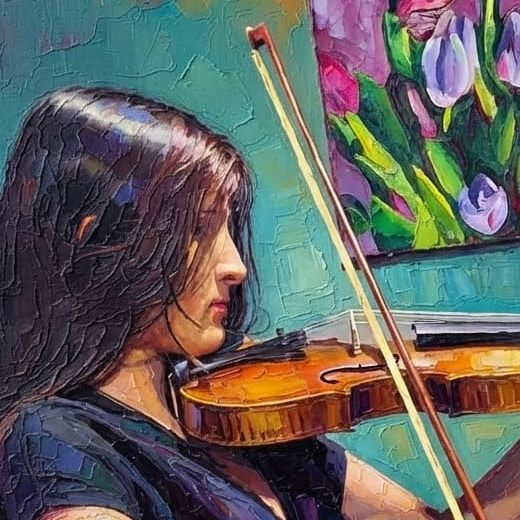

Artista
Juana Camila

Sobre el artista
Hola, soy Juana y tengo 11 años.
Me gusta mucho la naturaleza y el arte en sus diferentes formas. Estoy feliz explorando, aprendiendo a dibujar, a pintar óleo sobre lienzo y acuarela.
Me encanta pasar las tardes de los sábados con mi mejor amiga Alana, haciendo arte, compartiendo ideas y riéndonos juntas. 💛
Amo pintar paisajes, frutas y animales, porque la naturaleza me inspira muchísimo. También me inspiran mis padres, mi familia, mis amigos y amigos de mi mamá, que siempre me piden dibujos... aunque todavía no he logrado cumplir todos sus pedidos. 😄
Estoy descubriendo poco a poco mi estilo, aprendiendo nuevas técnicas y disfrutando cada vez más el proceso de crear. Gracias por venir hoy.